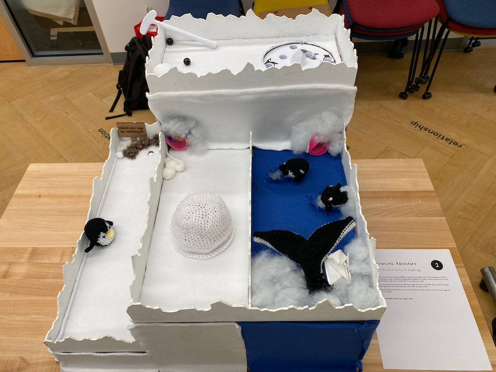
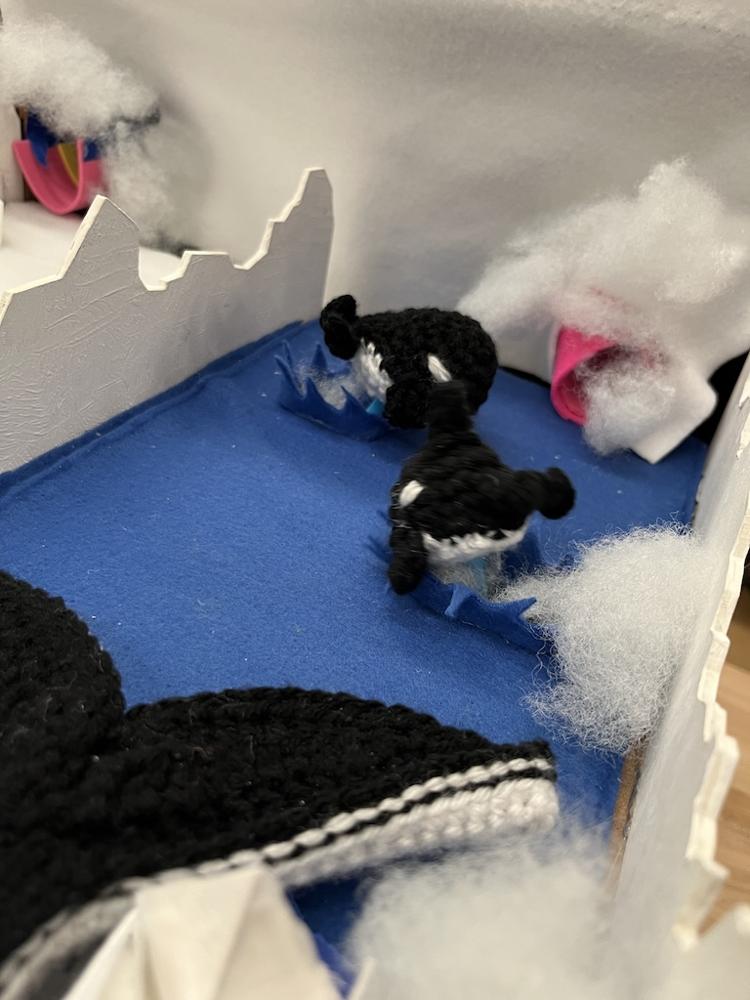
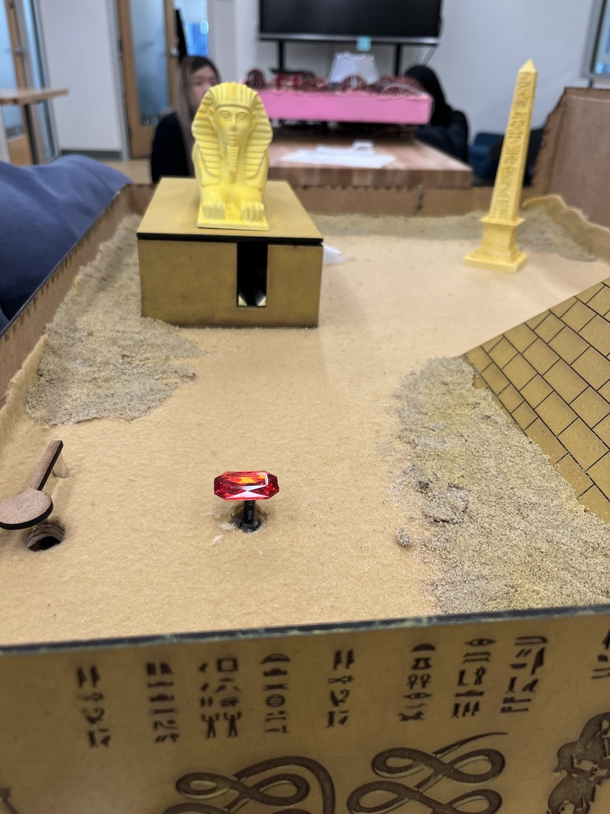
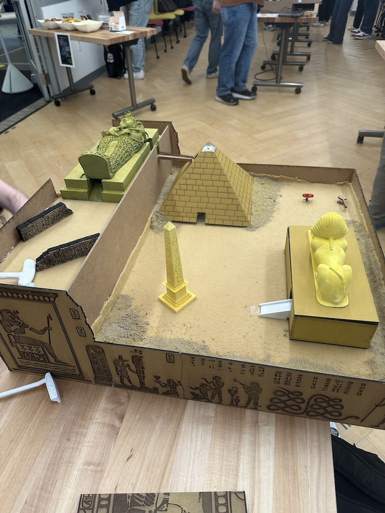
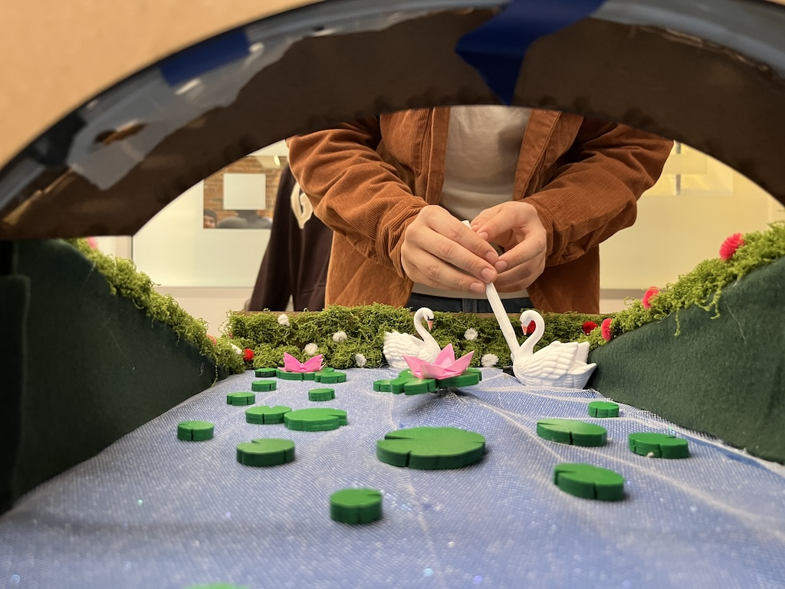
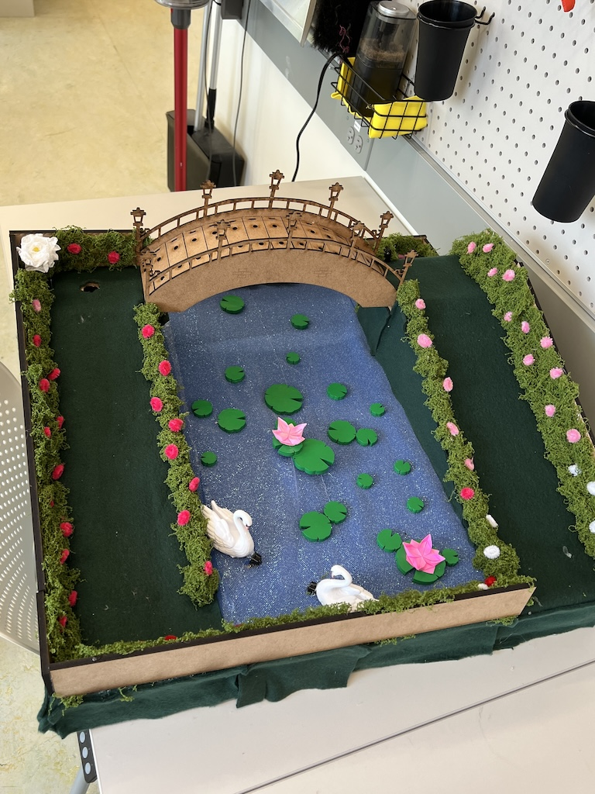
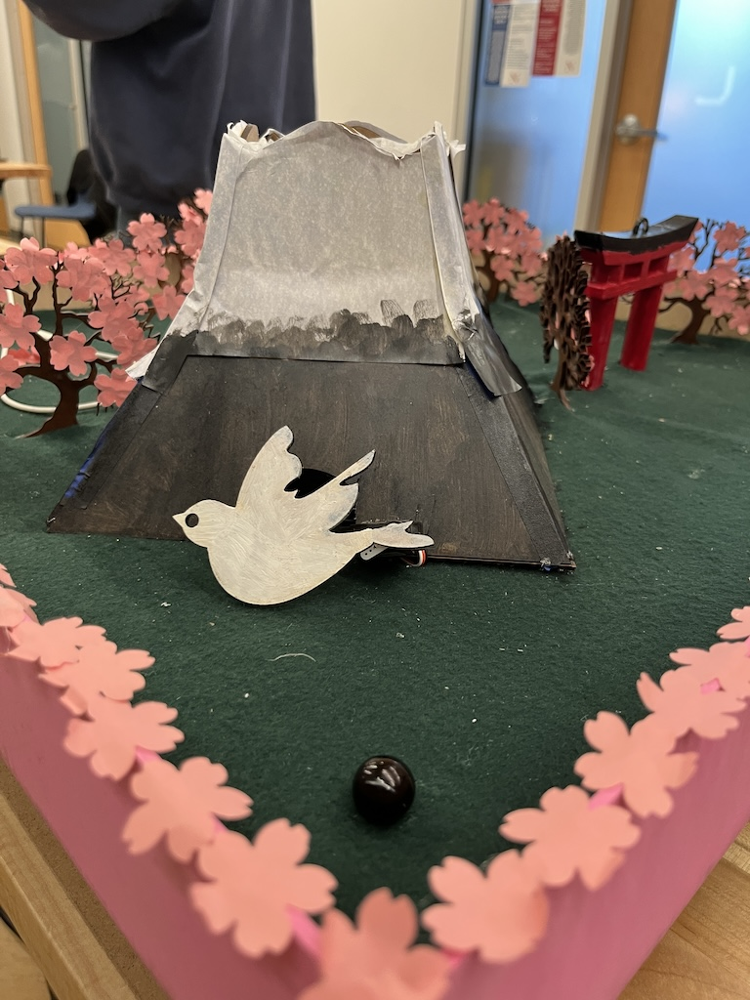
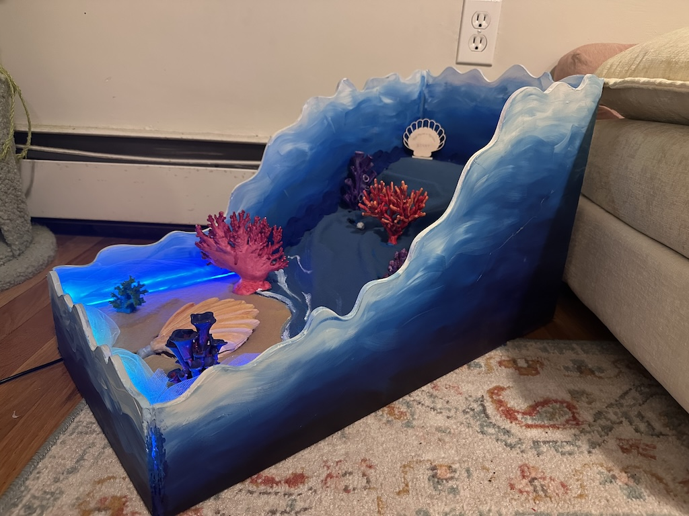
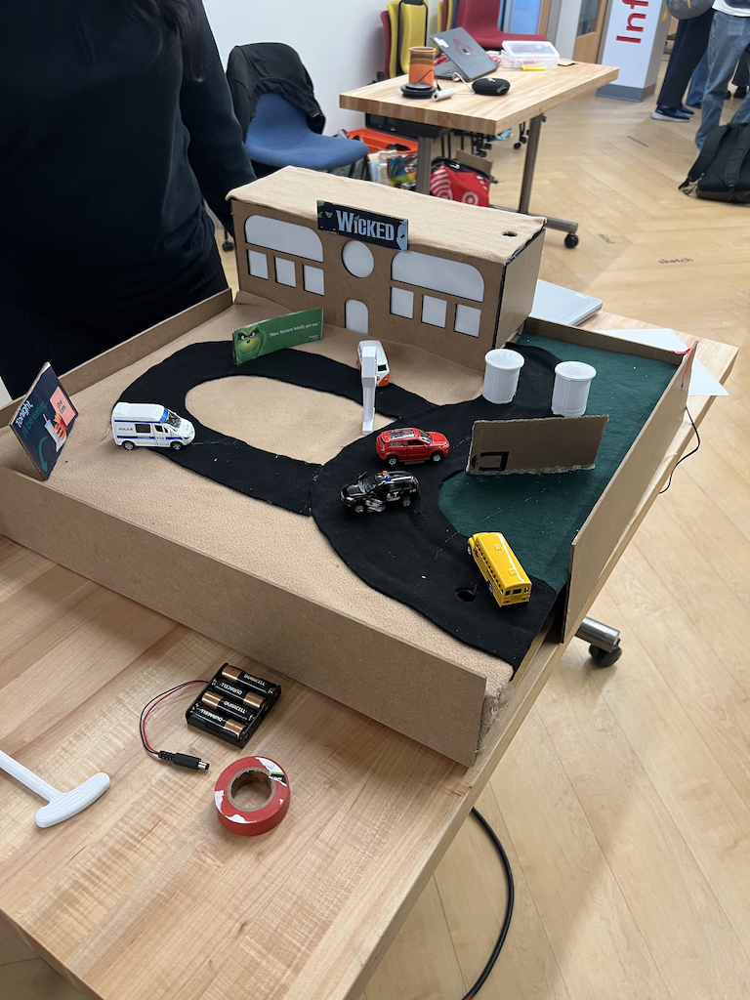
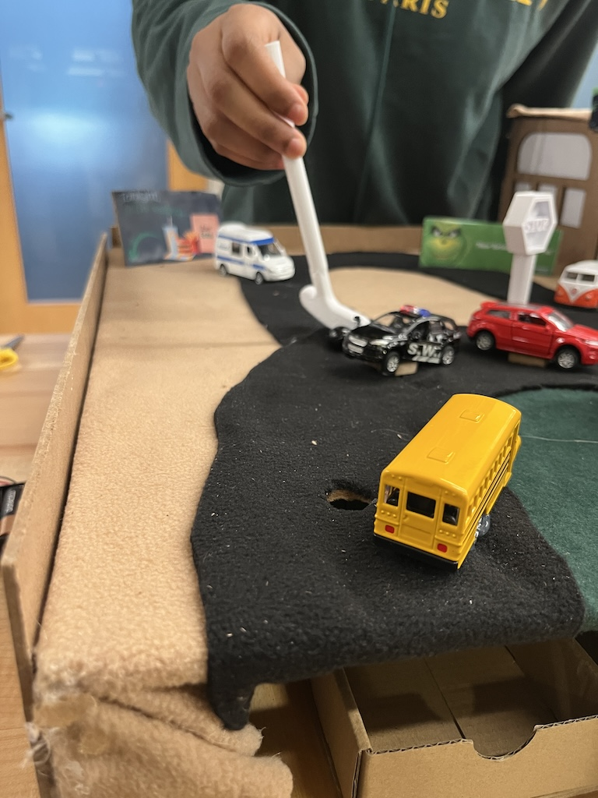

Explore Antarctica’s vibrant wildlife in this mini-mini golf hole. You’ll experience the life of a penguin trying to protect its egg while bringing it to safety. Keep a sharp eye out for the predatory seals and orcas that’ll try to steal your child.
The icy structures of the arctic will be a rough terrain to navigate, as you swim through freezing water, slide down glaciers, and climb up snowy hills.
Once the egg is back safely in its nest, it’ll need warmth to grow. Nurture your egg and watch it hatch!
 Navigate through an ancient tomb and find the mummy! But, when you get to his tomb, you will be cursed and exiled to ancient Egypt.
Travel through a pyramid, journey around idols, and get help from a magical sphinx. If you find and hit the mummy’s gem, your path back to the present will be revealed. But, you must get through the door in time or forever be trapped in the past!
 Claude Monet, a French artist and a leading figure of the impressionist movement, was deeply inspired by nature – not just in his paintings but in the garden he created at his home in Giverny, France. Designed as a living work of art, the garden is known for its flowers, tranquil pond, floating water lilies, and the iconic bridge. It became the subject of many of Monet’s famous paintings, capturing the beauty of the landscape.
This mini-mini golf course, inspired by Monet’s garden, invites you to move through a landscape of greenery and water, choosing your own route – cross the bridge for a scenic path or putt your way through the water and weave past floating lily pads and swans. This course offers an experience that reflects the beauty and atmosphere of Monet’s Garden.
 For centuries in Japan, cherry blossom season (hanami) has been a time for people to come together under the blooming sakura trees to appreciate beauty, reflect on life, and welcome the arrival of spring. It’s a tradition deeply rooted in Japanese culture, symbolizing peace and strength.
At Sakura Meadow, we’ve brought a piece of that experience to you. With glowing cherry blossoms, a torii gate, a light-up mountain inspired by Mt. Fuji, and gentle touches of nature throughout, this course captures the calm and beauty of hanami—without the long flight. Come relax, play, and enjoy the scenery. No passport needed.
The Great Barrier Reef, one of the world' natural wonders, contains a beautiful array of different organisms. Plagued with greedy pearl harvesters, the pearl has been torn from it's home and anxiously seeks to return. Despite its beauty, this ecosystem is not forgiving. Riddled with coral and moving sea creatures, it is not a simple quest.
This mini-mini golf story challenges you to play as the pearl and find your way home back to the clam. Weave through different corals and strategically avoid the infamous shark. Make it to the end to return the pearl to its rightful home. Careful, the plethora of obstacles will try to stand in your way.
This hole captures the energy and chaos of Times Square, one of New York City’s most iconic spots. Bright lights, fast taxis, spinning billboards, rolling down buildings, and nonstop movement make it a challenge to reach the end.
Play the role of a pedestrian navigating the city and carefully guide your marble through the course with flashing lights while avoiding rotating taxis that can block or redirect your shot.
Once the marble is in the hole, the apple near the hole will light up, signaling that you made it across Times Square safely!
 Students produced these mini-mini golf holes for the final showcase of the Physical Computing course.
We live in a physical world full of joyful textures, color, and tactile sensation. Too often the cutting of technology pulls us out of this multi-sensory world into a flat plane of glass. This course invites you to blow up those boundaries by building physical, sensory, and movement-based computational objects that invite critical reflection, delightful interaction, and prompt meaningful action. We will begin by using simple toolkits to practice how to build physical behaviors in the real world quickly. Readings will survey the rich world of tangible interfaces, guest talks will get behind the scenes with practitioners from the worlds of the arts, informal education and the maker movement. We will move on to build complex computation-based physical objects with intention and purpose based on your interests.
Prof. Rahul Bhargava
ARTG3250: Physical Computing(Spring 2025)
Northeastern University Department of Art + Design.